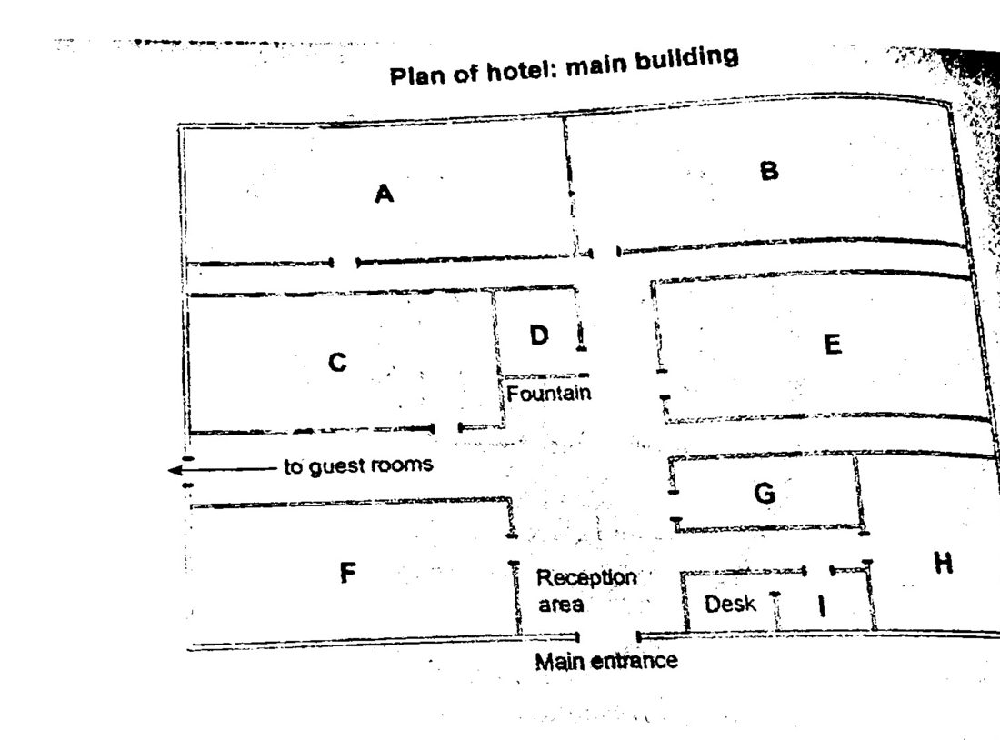

Phiếu trả lời Listening
Bấm số câu để nhảy tới câu đó. Bài làm được tự lưu trên máy này. Thời gian thi thật: khoảng 30 phút.
PART 1 Questions 1–10
Complete the form below.
Write ONE WORD AND/OR A NUMBER for each answer
Campsite Reservation Form
Name: Sandra Kemp
Park region: California
Campground name: Campground
Type of site:
Type of vehicle: will be driving a
Licence plate number:
Number of nights: two
Departure date:
Bear-proof food container: size required:
Type of nature walk booked: the walk
Type of park pass: the pass
Donation programme selection: the programme
📜 Lời thoại Part 1
Part 1.
You will hear a telephone conversation between a park reservations employee and a woman who wants to book a a campsite.
First, you have some time to look at questions one to six.
Now listen carefully and answer questions one to six.
Nature Park Services, how am I help you today? Hello, I'm calling to make a campsite reservation. Great, let me just pull up the reservation form and we can get started. Okay, first, could I get your name? Sure, it's Sandra Kemp.
All right, Ms. Kemp. I can make reservations for the Northern, Central, and Southern California parks. Which region will you be traveling to? Is Mount Laguna in the Central or Southern region?
Is that where you're going? Yes. That's Southern. Do you know which campground?
Actually, I was hoping you could help me with that. I've read a lot about two different campgrounds, sunrise and mountain.
campground has many hiking trails close by. But then again, Sunrise Campground is next to the lake and my husband loves to fish. Hmm. They're both really beautiful spots. I guess it depends on when you're going.
Really? Well, we're going in April. The thing is, fishing at Sunrise Campground is only allowed from June to September. So I suggest mountain. Okay, then, that makes it easy.
So we've selected the campground, so now we need to think about which sort of site. There are different options. You can stay at a cabin, a tent, or a recreational vehicle campsite.
Which type of site offers the most peace and quiet? A tent site would be your best bet. Sounds good to me.
So, if you've read about the park, you probably know that some vehicles aren't suitable for the park roads. Cars tend to get stuck when it rains. If you have a truck, you won't have any trouble. Luckily we do. We'll be driving that instead of our car.
I hope we don't get any rain, but I'd rather be safe than sorry. Perfect. I'll just need to get your license plate number. That's QY0918.
Thanks. And what about your trip dates? We'd like to stay for three days. Does that mean you'll be staying two nights? That's right.
We'll be arriving on April 10th and leaving on the 12th.
Before you hear the rest of the conversation, you have some time to look at questions 7 to 10.
Now, the park is home to some black bears. so you'll need to rent a bare-proof food container. to lock your food inside for hikes. It's really just a precaution. We have small, medium, and large food containers for campers. Oh, I'm familiar with food containers, but they can be heavy. Well, the large one is, but if you get the small size, it's not so heavy.
Well, let's do that. I really want something lightweight.
Would you be interested in signing up for a guided nature walk? on the second day of your trip? Oh, what kind of walk? Well, at 7 a.m. there are three different ones near your campground. There's the flower walk, the bird-watching walk, and the waterfall walk. Really?
I love gardening, so the flower walk sounds interesting. My son might be more into the waterfall one, but I can't imagine him getting up in time. Maybe I could go alone. could you sign me up. sure. a few more more things. Visitors must purchase park passes as well.
You have the option of the one-day pass, which would be cheaper, or the one-year pass, which is a better deal if you plan to go to more parks. Let's go ahead and get that. I'm sure we'll visit more parks soon. It's a really good bargain. Plus, we donate $5 of the pass fee to one of our three park programs.
You get to choose which one. Park programs? Yes. Well, we run a youth program for local kids to attend a nature camp in the summer. The other two options are conservation projects.
There's a wildlife program and a tree planting program.
Wow, they all sound worthwhile. What should I do? Um, it's important for children to appreciate the outdoors. Let's go with the youth program. OK.
We just need to review the fee and payment information information.
Part One. You now have one minute to check your answers to Part One.
PART 2 Questions 11–20
Questions 11–15
Choose the correct letter, A, B or C.
Talk to new hotel staff
11 Why has the manager arrived late at this meeting?
12 What is the main thing the manager is looking for in his staff?
13 When did the Ocean Edge Hotel first open?
14 How long do staff generally remain at the hotel?
15 Which group of guests is growing fastest?
Questions 16–20
Label the plan below.
Write the correct letter, A-I, next to questions 16-20
Plan of hotel: main building

16 Office
17 Function room
18 Main conference room
19 Meeting room
20 Restaurant
📜 Lời thoại Part 2
Part 2 You will hear a hotel manager talking to some new staff First you have some time to look at questions 11 to 15 Now listen carefully and answer questions 11 to 15
Good morning all of you. I do apologize for being a little late starting our meeting. One of our guests has been taken ill Susie, who's our assistant manager, has driven him to the hospital, but she was in the middle of compiling our weekly report for head office, which is urgent, and I had to finish writing it for her. Now this is the first day of work at the Ocean Edge Hotel for all of you. Let me say something that might surprise you.
You've all got a qualification in hospitality, and some of you have got very high grades.
But to me, what counts most is that you enjoy the contact with guests and really want to make a career in the hospitality industry. You'll be getting some very valuable experience here, so make the most of it. A few words about the history of the Ocean Edge Hotel. There have been buildings on this site for about 250 years. We know that in the 18th century there was a bakery here, when the town was very nice.
The building was destroyed by fire in the early 19th century and houses were constructed on the site.
These in their turn were demolished in the middle of the 20th century and replaced by the hotel.
I think it's fair to say that this is a popular place to work. We're always getting job applications from local people, even when we haven't any vacancies. And whereas in many hotels, staff tend to stay for a year or even less, here five is pretty standard. And in fact, several of our staff have been here for 10 years or more. You're the first people we've appointed in the last three years.
And we only needed to do that because we're currently constructing 25 new bedrooms. Depending on their location, hotels usually have mostly business guests or mostly tourists.
We attract a large number of tourists who come to spend a few days beside the ocean. We also have quite a lot of people who are here on business and perhaps stay for one or two nights.
What we've noticed recently though is that we're getting more and more regulars. People staying here for four nights every week, because they have jobs in this locality. But live somewhere else in the country. So they go home for the weekend.
Before you hear the rest of the talk, you have some time to look at question 16 to 20.
Now let me give you an idea of the layout of the hotel. All the bedrooms are along walkways in the gardens, and the main building, which we're in now, has most of the other rooms that guests use. Obviously, when they arrive, the first place they find themselves in is the reception area, where we're sitting. The desk is over on the right of the entrance, and the office is immediately behind it. There's a connecting door from the desk itself and another entrance from the corridor residents hire the function room for parties and other events.
This is right at the front of the hotel, on the left of the reception area, opposite the desk. This room is booked several evenings a week, and most weekends. It's a major source of income. Companies are very important customers for us, and a large number of local firms hold conferences here. To reach the main conference room, you go past the fountain as far as you can and the doors directly in front of you.
The meeting room is often hired by companies and other local organizations for small gatherings. For this room, you turn into the corridor at the side of the reception desk and you'll see the room facing you at the end of the corridor. Our restaurant is open to the public, as well as to hotel residence. and I'm pleased to say it has a very good reputation locally. You turn left just before the fountain as though you're heading for the guest's rooms and it's the large room on your right. Next, I should mention that there...
That is the end of Part 2. You now have 30 seconds to check your answers to Part 2.
PART 3 Questions 21–30
Questions 21–24
Choose the correct letter, A, B or C.
Presentation on African art
21 What first attracted Terence to the topic of Ife sculptures?
22 In his presentation Terence will focus on sculptures featuring
23 How did Terence finance his trip to Ife?
24 What was most memorable for Terence about his trip?
Questions 25–26
Choose TWO letters, A–E.
25–26 Which TWO additions will Terence make to the part of the presentation on the sculptures?
Questions 27–28
Choose TWO letters, A–E.
27–28 Which TWO additions will Terence make to the section on history?
Questions 29–30
Choose TWO letters, A–E.
29–30 Which TWO features of his research in Nigeria will Terence discuss in his presentation?
📜 Lời thoại Part 3
Part 3 You will hear a conversation between an art history student called Terrence and his tutor about the students plan for a class presentation.
First you have some time to look at questions 21 to 24.
Now listen carefully and answer questions 21 to 24.
Okay, Terrence. Now I've looked through your preliminary outline and notes for the presentation. on the art of the IFA region in Africa. That's in Nigeria, right? Yes, I'm concentrating on IFA sculptures from the 12th to the 15th century. How did you get interested in that?
I know there have been some recent articles in the journals about African sculpture. Well, I've read most of those now, but initially I got my introduction to this at a special display at the City Museum a few years ago. I just happened to be there and I saw these works and thought they were fantastic.
And I even went to Nigeria last summer to see more of them. I've seen the photos for your presentation and I must say the sculptures are gorgeous portrayals of what appear to be kings and queens. Yes, I decided to concentrate on those as they're the most typical. They're interesting because they're so naturalistic. unlike the abstract figures we often associate with African art. There's also a lovely sculpture of a mudfish and one of the scaly crocodile, but I didn't get very good pictures of those so I won't spend long on them.
Right. So what was the city of IFA like when these works were made? It's on the Niger River, isn't it? Yeah. The boat traffics, what made it a centre of commerce then, as it still is today.
with a big university. Speaking of modern day, Ephae, tell me about your trip. I was incredibly lucky to be able to get enough money to go. My parents encouraged me, but they couldn't afford to send me. I applied for a grant from the Arts Council, and in the end I got it.
I also wrote a series of articles about my trip for the local newspaper, but I didn't get any money for that I was just pleased to get them published. And the highlight of the trip? That had to be meeting a professor, working on the site in Effay, who had been a young boy when they first discovered the sculptures by accident at a building site in 1938.
He had been working at the site. Of course, I also got to talk to lots of artists who were working there today, and I got to try my hand at making a little sculpture myself.
some time to look at questions 25 to 30. Now listen and answer questions 25 to 30.
Well, let's see what you might do to improve what you're planning for your presentation. About the sculptures themselves, I think I need to add as much as possible about the details of the way they were made. Of course, I can't add anything about the artists who made them, because nobody really knows anything about them. All good points. And you've certainly said enough about what the sculptures depict, what the subjects are, that's well covered.
But I'd make some bigger photos of them, so you can clearly see the fine detail.
Okay. And I would limit my personal reactions to these works of art if I were you. I know you think they're fantastic. You're right. I'll contain my enthusiasm.
What about the section of the presentation which I call history?
I'd like to go into more depth about the history of that whole area, you know, in the countries around Nigeria. That would make the presentation stronger, but I think you've covered the situation regarding the rulers of the country quite well. And you've got plenty already about what the IFA people were doing then and the way their society was structured. And in fact, I think you could cut out the bit about modern Nigerian history because it's not relevant. I agree, that doesn't fit.
But perhaps I should concentrate more on the religious beliefs, since all these sculptures do seem to have some kind of religious association.
Good. I can lend you a book on that.
Now, probably the part the class will find most interesting is the report of your trip to Nigeria and the research you did there. So I gather you managed to use the University Library in IFA. Yes, as soon as I'd explained why I wanted the information, that was no problem. They couldn't have been more helpful. There were some interesting accounts of how the first sculptures were found and what happened to them, which I want to include.
What struck me when I saw the sculptures in Nigeria is the extent to which 20th century European artists were influenced by them.
my presentation I think.
What about the sources of the materials they used? You don't mention that anywhere. I didn't manage to find out much about that. I want to cover the theories about who the original sculptors were though. Yes, the idea that a lot of them may have been made by the same person.
That's very interesting. It is, isn't it? Right, well, thanks for all the advice. Now I think I need to work.
That is the end of Part 3. You now have 30 seconds to check your answers to Part 3.
PART 4 Questions 31–40
Complete the notes below.
Write ONE WORD ONLY for each answer.
Reasons for and against urban migration
Cities today
account for 3% of our planet’s land area
produce less than non-urban areas
The advantages of more people moving to the city
some would recover
more energy efficient for services like electricity and water
in the city is more environmentally friendly
Recycling: energy could be generated from the methane gas from
Population: urban women
start a family much later
are more likely to gain at work
The downsides of living in the city
possible loss of amongst some migrants
the higher rate among the population
the poor quality of the
Economic factors: increased in a population leads to more energy consumption
citizens may find the quantity of daily stressful
📜 Lời thoại Part 4
Part 4 You'll hear part of a lecture on the subject of why living in the city may be better for the environment than living in rural areas.
First you have some time to look at questions 31 to 40.
Now listen carefully and answer questions 31 to 40.
Good morning everyone. Today we're looking at urban migration, the movement of people migrating from outside cities, inter-sities.
conclusion that a rural lifestyle is greener. However, recent studies have suggested otherwise. First of all, if we take the land area of the earth, the proportion that cities take up is a mere 3% and these same cities actually produce 30 to 40% of the carbon that is released into the atmosphere, a lower amount than the 60 to 70% from non-urban areas. Anyway, let's imagine that most people decide to migrate to the city. What kind of impact would that have.
For a start, this movement of people from the countryside should lift the pressure of intensive agriculture from the land, allowing forests to regenerate. Another point in favour of urban migration is that it can be far more energy efficient if services are concentrated in the city for example. This is true for electricity and as you can imagine water. Then, once you remember that rural communities are often very spread out, you can see yet another green reason to live in the city. Rural citizens rely on the car to make their journeys far more than city dwellers, who have other more environmentally friendly forms of transport that they can use, such as buses and trains.
The journeys tend to be shorter too. Yet another point in favour of urban migration is the kind of recycling schemes that can only take place where the population is concentrated. Take for instance, Seattle in the USA, where methane gas is being put to good use and as generating energy for the city.
It's produced from the city's rubbish, which could not be collected so efficiently from rural areas.
Now another factor that threatens the environment is the growing world population. It's estimated that 75 million babies are now born every year, and in some countries the birth rate shows no signs of slowing down. Urban migration may provide an answer here.
Now in cities, one of the reasons that women tend to have fewer children is that they get married and start their families later. And the reason for this is that it's far easier to find a job and once you have one, to get a promotion. So yes, the focus isn't on bearing children.
Well, it would be foolish to pretend that there are no downsides to urban living when clearly there are. The thing that critics often mention is the idea that migrants may end up losing their culture, although some studies have found the opposite as true. Rather than give up their traditions, people actually work hard to maintain them.
More evident is the fact that compared to the lower rate that is observed in rural areas, we can see that there is more crime occurring in cities.
There won't be many of us here today who can say we haven't been directly or indirectly affected by it.
There's another issue that we have to deal with. So many cities, including our own, now suffer from high levels of pollution so that the air we breathe is far from pure. And another factor against that urban is greener idea is that urbanisation often drives a country's economy. Put simply, when there is greater wealth in society, more energy is consumed. One of the direct effects of a stronger economy, something that many citizens will now experience every day and may well find stressful, is the amount of traffic on the road, despite the other options we mentioned earlier.
This is a problem that is not about to go away, although there There are some solutions that could be considered.
Let's have a look at some of those.
That is the end of Part 4. You now have one minute to check your answers to Part 4.
Phiếu trả lời Reading
Bấm số câu để nhảy tới câu đó. Bài làm được tự lưu trên máy này. Thời gian thi thật: 60 phút.
READING PASSAGE 1 Questions 1–13
You should spend about 20 minutes on Questions 1–13, which are based on Reading Passage 1 below.
Studies in the History of Art and Visual Culture
General Information
The Department of the History of Art, which operates within the Faculty of history, offers a one-year postgraduate course in the History of Art and Visual culture. We welcome applicants from a broad range of backgrounds and do not require students to have a first degree in art history. In addition to a compulsory course on Theory and Methods, students take two one-term optional courses, and write a 15,000-word dissertation on a topic of their choice. The course aims to redefine art history and includes a broader range of objects and visual media than other art history courses. Images and objects produced in many contexts- ranging from the scientific to the popular- have been brought together to show how visual styles at different periods and in different places can be understood in relation to the aesthetic, intellectual and social facets of various cultures.
Theory and Methods
This core course provides an advanced introduction to the major methodological issues and traditions of art history. The course is organised around a series of issues that relate to the production of art and people’s responses to it. Students will discuss these issues and assigned readings in small weekly classes. In lectures, the tutors will consider works of art from a variety of cultures in order to demonstrate that context and artistic method are important aspects of art history.
Choosing Courses
The optional courses listed below are not available every year and prospective students are advised to check on the availability of specific courses. Students should also note there may be some restrictions on combining particular courses within their degree programme. Students wishing to take a course that does not appear in the list but is offered by the Faculty of History will need to get permission from the relevant Course Tutor. An application should then be made by the candidate’s supervisor.
Authenticity and Replication
The course is designed to give students exposure to a central issue of the visual arts in an explicitly inter-disciplinary and cross-cultural framework. It will use a series of case studies to explore the idea of ‘the real’ or ’the authentic ’in both images and objects. The historical and geographical contexts to be addressed will range widely, from ancient Greece and Rome, to early modern China and to contemporary art, including works seen as genuine as well as works regarded as fraudulent. The course will make particularly extensive use of trips to museums to view actual objects and Images.
French Painting 1880-1912
The course examines the development of Post-impressionist painting between 1880 and 1912, at which point Cubism began to have a major impact on the thinking of French artists. Rather than tracing a history of styles or individuals, we consider how artistic practices were closely linked to contemporary developments. The rise of new forms of image distribution, including cinema, will be addressed, as well as the changing role of painting in the public sphere. The writings of artists and their contemporaries will be examined alongside recent art-historical work.
Medieval European Art
This course addresses two problems central to the history of art: the roots of artistic invention, and suitable methods for instructing on technique. During this period, young, would-be artists acted as assistants to a master painter in his workshop. With this type of training, what was the scope for originality, and how was stylistic change encouraged? These issues are brought into sharp focus by the changing visual culture of late-medieval Europe, between the twelfth and the fifteenth centuries. The available literature on these themes is rich, yet inconsistent: the course therefore addresses questions that are very much open.
Reception of Classical European Art
From the fourteenth century the discovery of classical antiquities inspired contemporary artists, some copied closely, some restored the ancient in a contemporary style, while others reinterpreted freely. The course focuses on sculpture, painting and architecture in Britain, with a selection of other European works. Sculpture is examined in life-size marble statues, and in miniature with porcelain figurines. Painting is studied through the designs painted on vases, particularly Athenian and South Italian Architecture is examined through the ancient Greek temples that were excavated in the nineteenth century and also replicated in miniature for sale to travelers.
Women, Art and Culture in Early Modern Europe
This course will explore the various roles played by women in the production and reception of art and architecture in fifteenth-to seventeenth-century Europe. After many decades of relative neglect, the significance of the way women contributed to the art and culture of Early Modern Europe has come to light. By drawing on this wealth of new research, the course will examine the careers of professional women artists working in Northern and Southern Europe. We also consider how famous women patrons, such as Isabella d’Este and Catherine de Medici, influenced the careers of artists and wider perceptions about art. Another topic that will be addressed is the representation of women in the visual arts, for example as sitters for state portraits and marriage paintings.
Questions 1–6
Do the following statements agree with the information given in Reading Passage1?
In boxes 1-6 on your answer sheet, write
TRUE if the statement agrees with the information
FALSE if the statement contradicts the information
NOT GIVEN If there is no information on this
1 Applicants to the department must have previously studied art history.
2 Students can choose two optional courses instead of the Theory and Methods course.
3 The course organisers had more problems collecting art objects from some historical periods than others.
4 The Theory and Methods course focuses on the way art is made and perceived
5 Students will be able to do any of the optional courses that are listed.
6 Students may be able to take an unlisted course if they get the appropriate approval.
Questions 7–13
Complete the notes below.
Choose ONE WORD ONLY from the passage for each answer.
Write your answers in boxes 7-13 on your answer sheet.
Optional courses
Authenticity and Replication
genuine art is studied in addition to that considered
art objects are studied in
French Painting 1880-1912
the course covers the period up to when started to be prominent
the course looks at the connections between art and new developments such as
Medieval European Art
the course looks at two issues: artistic creativity and processes for teaching technique
the course considers how artists could be original when taught by an expert in a
Reception of Classical European Art
life-sized and miniature sculpture is examined
painting is examined by looking at the decoration of
architecture is assessed by studying 19th century models bought by
READING PASSAGE 2 Questions 14–26
You should spend about 20 minutes on Questions 14–26, which are based on Reading Passage 2 below.
Sleep – who needs it?
It appears that some animals can survive on remarkably little sleep. Could this also be the case for humans?
A As any new parent knows, the first months of an infant’s life mean little sleep for the family. But humans have it easy compared to orcas, also known as killer whales. University of California, Los Angeles, neuroscientist Jerome Siegel and post-doctorate fellow Oleg Lyamin have found that for the first month after giving birth, killers whale mothers and their calves do not experience normal sleep at all, and neither stops moving for more than a few minutes at a time. ‘These sleep patterns contrast with those of most other mammals, which need extra sleep during infancy and gradually sleep less as they age, while orcas are never as active as in the first months of life,’ Siegel says. The young orcas’ movement and wakefulness help them keep their body temperature constant until mass and blubber insulation develop and allow for frequent respiration. Meanwhile the mothers of newborn orcas must constantly look out for sharks, while teaching the calves to breath.
B According to Siegel, the results of his orca study fundamentally change our view of sleep. ‘It has often been said that sleep is necessary for an animal’s primary development, particularly that of the brain,’ Siegel says. ‘But here we have a creature which grows one of the largest brains in the animal kingdom, and yet it is doing this without sleep.’ All mammals and birds appear to need sleep, but scientists are unsure if reptiles and fish do. ‘When you come downstairs at three in the morning, the goldfish isn’t lying on the bottom of the bowl, it’s swimming around,’ Siegel says. But other scientists believe fish do enter a restful dormant state that is at least similar to sleep.
C Some animals die without proper sleep, and experiments have shown that sleep deprivation can cause death more quickly than food deprivation. Two weeks without sleep can kill laboratory rats. Sleep is clearly important, but what determine how much we sleep, and when? Siegel thinks that the sleep an animal needs is dictated less by biological functions than by the animal’s environmental niche. Availability of food is a major factor. The long rest typical of bats, for example, helps the animas to economize on energy. ‘if a bat eats insects for only three hours in the evening, then maybe the best thing is to go hang in a cave upside down for the rest of the day.’ Siegel says.
D Sleep is not the same for all creatures. In dolphin’s half the brain may rest while the other half stays vigilantly awake, and the animal carries on everyday activities. Dolphins sleep literally with one eye closed—the eye on the opposite side of the body to the dozing brain hemisphere, since the right brain hemisphere works the left eye and vice versa. However, for unknown reasons, closed eyes seem to be a virtually universal prerequisite for sleep.
E Neuroscientist Clifford Saper of the Harvard Medical School has located a small area at the base of the brain called the ventrolateral preoptic nucleus that sends chemical signals to other parts of the brain during sleep to slow those brain parts down and determines the best sleep budget for the animal. It is flexible, able to reverse the normal nocturnal habits of a rodent to make it sleep at night, if day is the only time the rodent can find what it needs to eat. According to Saper, evidence suggest that for restoring tried muscles or any other body system, sleep is no more effective than a comparable period of wakeful resting - except for one critical organ, the brain. The human brain apparently cannot do without sleep. Studies show that prolonged wakefulness leads to degradation of memory, alertness, coordination and judgment.
F Nevertheless, studies of species exhibiting ‘natural models of sleep deprivation,’ as psychologist Verner Bingman of Ohio’s Bowling Green State University calls them, may allow researchers to provide us with new methods for adapting to limited sleep without losing effectiveness. ’We could live 20-hour lives instead of 12- or 14 hours lives, ’says Bingman, who is studying the behavior of the migratory birds Swainson’s thrushes, which for migration purposes, go from a normal night’s sleep of 10 to 12 hours down to about 2.5 hours so they can fly at night. To handle the energy output of the long journey they must nearly double the amount of fat in their bodies. They have to switch from a diet of seeds to one of fruits and insects, which they must search for during the day, so further limiting their sleep time.
G Bingman and doctoral student Thomas Fuchs have discovered that during morningand midday hours the thrushes enter phases of drowsiness, during which they take as many as 50 micro naps per hours, most of them lasting about 10 to seconds. When brain waves are measured, these napping behaviors look very much like normal sleep. Says Bingman, “The trick would be to develop techniques or drugs that could recreate a similar brain pattern in humans. ‘Saper, however, disagree. ’The trick would be to develop techniques or drugs that could recreate a similar brain pattern in humans. ’Saper, however, disagree. ’The effect of 20 hours of wakefulness on driving is the equivalent of two shots of whiskey,’ he warns. ‘Sleep deprivation is unfortunately a major cause of death in the US in young adults, who have a very high crash rate between 3 and 6 am.’ He thinks we are dreaming if we think we’re ever going to get by on as little sleep as newborn orcas or migrating thrushes
Questions 14–17
Look at the following findings (Questions 14-17) and the list of researchers below.
Match each finding with the correct researcher A, B or C
NB You may use any letter more than once
14 the physiological mechanism which controls the body’s sleep patterns
15 an observation that some creatures may have no need for sleep
16 data indicating the dangers of extended periods of sleeplessness
17 an animal behaviour which could serve as a basis for modifying human sleep pattern
List of Researchers
A Jerome Siegel
B Clifford Saper
C Verner Bingman
Questions 18–23
Complete the sentences below.
Choose NO MORE THAN TWO WORDS from the passage for each answer.
Write your answers in boxes 18-23 on your answer sheet.
18 Movement and wakefulness in young orcas assist them in maintaining
19 New orca mothers need to be awake in order to protect their young from
20 Sleep deprivation experiments on have shown that animals die without adequate sleep
21 Scientists have not yet worked out why almost all animals sleep with
22 For humans, sleep is vital for the efficient functioning of the
23 During periods of Swainson’s thrushes experience severe sleep deprivation
Questions 24–26
Reading Passage 2 has seven paragraphs, A-G.
Which paragraph contains the following information?
Write the correct letter, A-G, in boxes 24-26 on your answer sheet.
24 mention of the potential use of chemicals to reduce sleep periods
25 reference to a lack of expert consensus regarding the behaviour of certain types of animal
26 an example of an animal which continues to function normally during its sleep periods
READING PASSAGE 3 Questions 27–40
You should spend about 20 minutes on Questions 27–40, which are based on Reading Passage 3 below.
Looking at daily life in ancient Rome
In this preface to a history the writer explains the factors affecting he scope of his study
If our ideas on Roman life are not to become lost in confusion. we must study it within as strictly defined time. Nothing changes more rapidly than human customs. Looking at our own more familiar world, apart from the great scientific discoveries of recent centuries which have turned it upside down -steam, electricity, railways, motor cars and aeroplanes, for example it is clear that the elementary forms of everyday life have been subject to increasing change. Potatoes. for example, were not introduced into Europe until the sixteenth century, coffee was first drunk there in the late sixteenth or early seventeenth, and the banana was used in desserts in Europe at the beginning of the twentieth. The law of change was not less operative in antiquity. It was a commonplace of Roman rhetoric to contrast the crude simplicity of the Republic (509 BC-27BC) with the luxury and refinement of the imperial times which followed. There is no common measure whether of home or house or furniture. Between ages which are so different.
Since a choice of time must necessarily be made, this history will confine itself to studying the generation which was born about the middle of the first century AD, toward the end of the reign of Claudius (41-54 AD) or the beginning of the reign of Nero (54-68 AD), and which lived on into the reign of Trajan (98-117 AD) and of Hadrian (117-138 AD). This generation saw the Roman Empire at its most powerful and prosperous. It was witness to the last conquests of the Caesars: the conquest of Dacia, in modern-day eastern Europe, which brought vast mineral wealth into the Empire, and the conquest of Arabia, which helped to bring the riches of India and East Asia flooding into Rome. In the material domain, this generation attained the pinnacle of ancient civilization.
By a fortunate coincidence -all the more fortunate in that Latin literature was soon to run nearly dry -this generation is the one whose records combine to offer us the most complete picture of Roman life that we possess. We have a profusion of vivid and picturesque descriptions, precise and colourful, in such works as the Epigrams of Martial, the Satires of Juvenal and the Letters of Pliny. In addition, the Forum of Trajan in Rome itself and the ruins of Herculaneum and Pompeii, the two prosperous resorts buried by eruption of Mount Vesuvius in 79AD. supply an immense fund of archaeological evidence. Later excavations have also restored to us the ruins of the city of Ostia, which date in the main from the time when the Emperor Hadrian created this great commercial city as a realisation of his town planning ideas, Fortune has favoured the historian of this time.
It is not enough to focus our study of Roman life only on a fixed time. It would lack foundation and consistency if we did not also focus it in space-in the country or in the town. Even today when the facilities for communication bring something of the city into the smallest and most isolated country cottage, there remains a significant difference between rural existence and the excitement of city life: a much greater gulf separated the peasant from the townsman of antiquity. So large was the inequality between them that, according to the historian Rostovtzeff, it pitted one against the other in a fierce and silent struggle which pierced the wall protecting the Roman privileged classes from the barbarian flood from the north. When the barbarian forces began to invade Roman territory, the peasants decided to fight alongside them.
The townsman, in fact, enjoyed all the goods and resources of the earth. The peasant knew nothing but unending labour without profit and was unable to enjoy the activities available in even the poorest of cities: the liveliness of the sports field, the warmth of the public baths and the magnificence of public spectacles. In a work on the history of everyday life, we must give up any attempt to blend two such dissimilar pictures into one and must choose between them. The time which we have chosen to describe day by day is that of those Roman subjects who spent their time exclusively in the town, or rather in The City, Rome, which they regarded as the hub and centre of the universe, proud and wealthy ruler of a world which seemed at that time to have been pacified forever.
To perform our task well, we must first try to form an adequate picture of the surroundings in which our subjects lived, and by which their lives were coloured, freeing ourselves from any misconceptions concerning it. We must seek to reconstruct the physical nature of the great city and the social milieu of the various classes of the hierarchy by which it was governed. We must also investigate the moral background of thought and sentiment which can help explain both its strength and its weaknesses. The way in which the Romans of Rome employed their time can only be studied satisfactorily after we have plotted out the main lines of the framework within which they lived and outside of which the routine of their daily life would be more or less unintelligible.
Questions 27–30
Choose the correct letter A, B, C or D
Write the correct letter in boxes 27-30 on your answer sheet.
27 What does the writer say about the period mentioned in the second Paragraph?
28 Ostia is mentioned as
29 The statement that Fortune has favoured the historian of this time refers to the fact that
30 In comparing urban and rural life in the Roman Empire, the writer states that
Questions 31–36
Do the following statements agree with the claims of the writer in Reading Passage 3?
In boxes 31-36 on your answer sheet. Write
YES if the statement agrees with the claims of the writer
NO if the statement contradicts the claims of the writer
NOT GIVEN If it is impossible to say what the writer thinks about this
31 Rome s conquest of Arabia resulted in large-scale immigration from the east into Rome.
32 More can be learned about Roman life from the literature of the period studied in this book than from later Latin literature.
33 Discoveries at Herculaneum and Pompeii showed that certain beliefs about Roman life were wrong.
34 Roman peasants provided assistance to the Empire when it was attacked.
35 Rural inhabitants of the Roman Empire had a difficult life.
36 Entertainment facilities were limited to the city of Rome itself.
Questions 37–40
Complete the summary using the list of words, A-I, below.
Write the correct letter, A-I in boxes 37-40 on your answer sheet.
The scope of the writers study
It was important for the writer to limit several aspects of his He decided to focus on a limited in Roman history, and to concentrate on the section of the population who were The writer was interested in the physical environment, the people that ruled the country and the that contributed both to Rome’s strength and to its weaknesses.
A emperors
B setting
C values
D peasants
E city-dwellers
F social classes
G myths
H period
I investigation